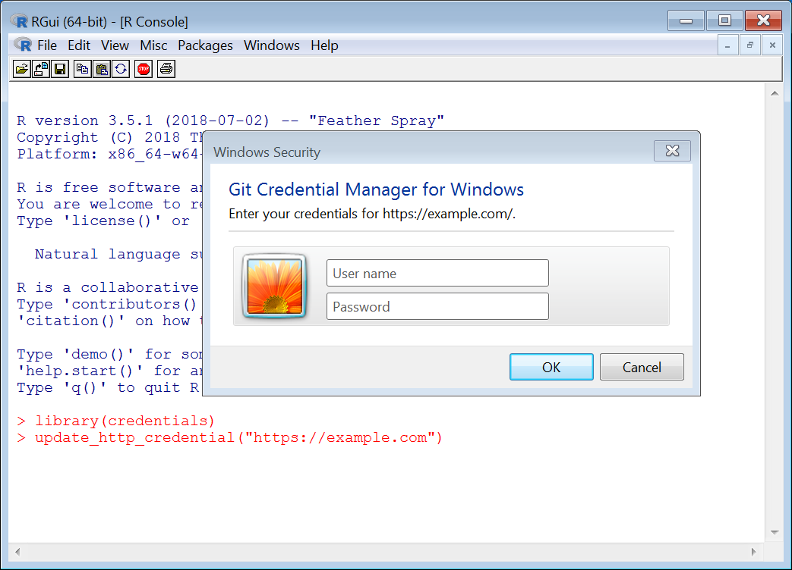
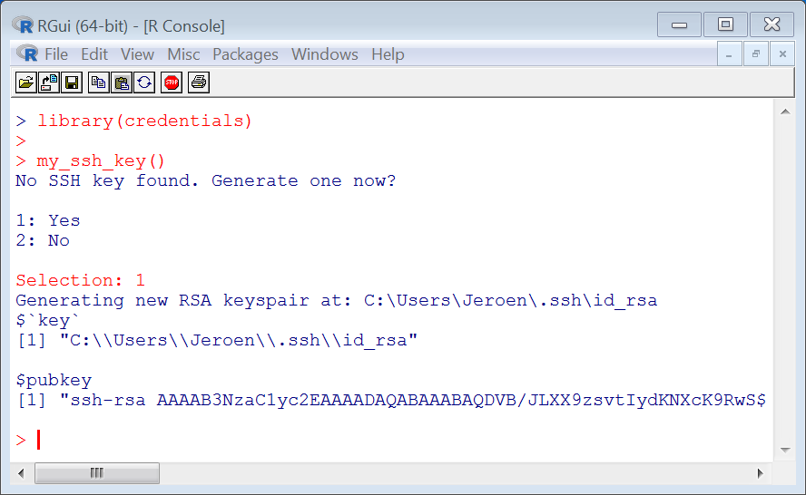

The credentials package contains tools for configuring and retrieving SSH and HTTPS credentials for use with git or other services. It helps users to setup their git installation, and also provides a back-end for packages to authenticate with existing user credentials.
Two types of remotes
## Found git version 2.25.1
## Supported HTTPS credential helpers: cache, store
## Found OpenSSH_8.2p1 Ubuntu-4ubuntu0.2, OpenSSL 1.1.1f 31 Mar 2020
## No key found. Use ssh_keygen() to generate one!Git supports two types of remotes: SSH and HTTPS. These two use completely distinct authentication systems.
| SSH REMOTES | HTTPS REMOTES | |
|---|---|---|
| url | git@server.com |
https://server.com |
| authentication | Personal SSH key | Password or PAT |
| stored in | file id_rsa or ssh-agent
|
git credential store |
For HTTPS remotes, git authenticates with a username + password. With GitHub, instead of a password, you can also use a Personal Access Token (PAT). PATs are preferred because they provide more granular control of permissions (via the PAT’s scopes), you can have many of them for different purposes, you can give them informative names, and they can be selectively revoked. Note that, if you use 2FA with GitHub, you must authenticate with a PAT if you use the HTTPS protocol.
For SSH remotes, git shells out to ssh on your system, and lets ssh take care of authentication. This means you have to setup an ssh key (usually ~/.ssh/id_rsa) which you then add to your git profile.
Special note for Windows
Windows does not include a native git installation by default. We recommended to use the latest version of Git for Windows. This bundle also includes ssh and git credential manager for windows which is all you need.
Important: ssh keys are stored in your home directory for example: C:\Users\Jeroen\.ssh\id_rsa, and not in the Documents folder (which is what R treats as the home sometimes). The ssh_home() function shows the correct .ssh directory on all platforms.
Part 1: Storing HTTPS credentials
HTTPS remotes do not always require authentication. You can clone from a public repository without providing any credentials. But for pushing, or private repositories, git will prompt for a username/password.
git clone https://github.com/jeroen/jsonliteTo save you from entering your password over and over, git includes a credential helper. It has two modes:
-
cache: Cache credentials in memory for a short period of time. -
store: Store credentials permanently in your operating system password manager.
To see which helper is configured for a given repo, run:
## [1] "cache"Most git installations default to store if supported because it is more convenient and secure. However the look and policy of the git credential store for entering and retrieving passwords can vary by system, because it uses the OS native password manager.
Accessing the HTTPS Credential Store from R
The credentials R package provides a wrapper around the git credential command line API for reading and saving credentials. The git_credential_ask() function looks up suitable credentials for a given URL from the store. If no credentials are available, it will attempt to prompt the user for credentials and return those instead.
library(credentials)
git_credential_ask('https://example.com')## $protocol
## [1] "https"
##
## $host
## [1] "example.com"
##
## $username
## [1] "jeroen"
##
## $password
## [1] "supersecret"
##
## attr(,"class")
## [1] "git_credential"The function git_credential_update() looks similar but it behaves slightly different: it first removes existing credentials from the store (if any), then prompts the user for a new username/password, and saves these to the store.
# This should always prompt for new credentials
git_credential_update('https://example.com')In a terminal window this will result in an interactive password prompt. In Windows the user might see something like this (depending on the version of Windows and git configuration):

Setting your GITHUB_PAT
Automatically populate your GITHUB_PAT environment variable from the native git credential store. The credential manager will safely prompt the user for credentials when needed.
credentials::set_github_pat()
## Using GITHUB_PAT from Jeroen Ooms (credential helper: osxkeychain)Use this function in your .Rprofile if you want to automatically set GITHUB_PAT for each R session, without hardcoding your secrets in plain text, such as in your .Renviron file.
Non-interactive use
Retrieving credentials is by definition interactive, because the user may be required to enter a password or unlock the system keychain. However, saving or deleting credentials can sometimes be done non-interactively, but this depends on which credential helper is used.
The manual page for credential_approve and credential_reject has more details about how to call the basic git credential api.
Part 2: Managing SSH Keys
For SSH remotes, git does not handle authentication itself. Git simply shells out to ssh on your system and uses your standard user ssh configuration. Hence authenticating with SSH git remotes comes down to setting up your ssh keys and copying these to your profile.
The credentials package provides a few utility functions to make this easier. The ssh_key_info() function calls out to look up which key ssh uses to connect to a given server. This is usually ~/.ssh/id_rsa unless you have a fancy custom ssh configuration.
## Error in credentials:::ssh_key_info(auto_keygen = FALSE) :The output shows both the path to your (private) key as well as the ssh pubkey string. The latter is what you have to enter in your GitHub profile to associate this key with your user account. You will then be automatically authenticated when using GitHub SSH remotes.
Generating a key
To use SSH you need a personal key, which is usually stored in ~/.ssh/id_rsa. If you do not have a key yet, the ssh_key_info() function will automatically ask if you want to generate one.

You can also generate a key manually elsewhere using the ssh_keygen() function.